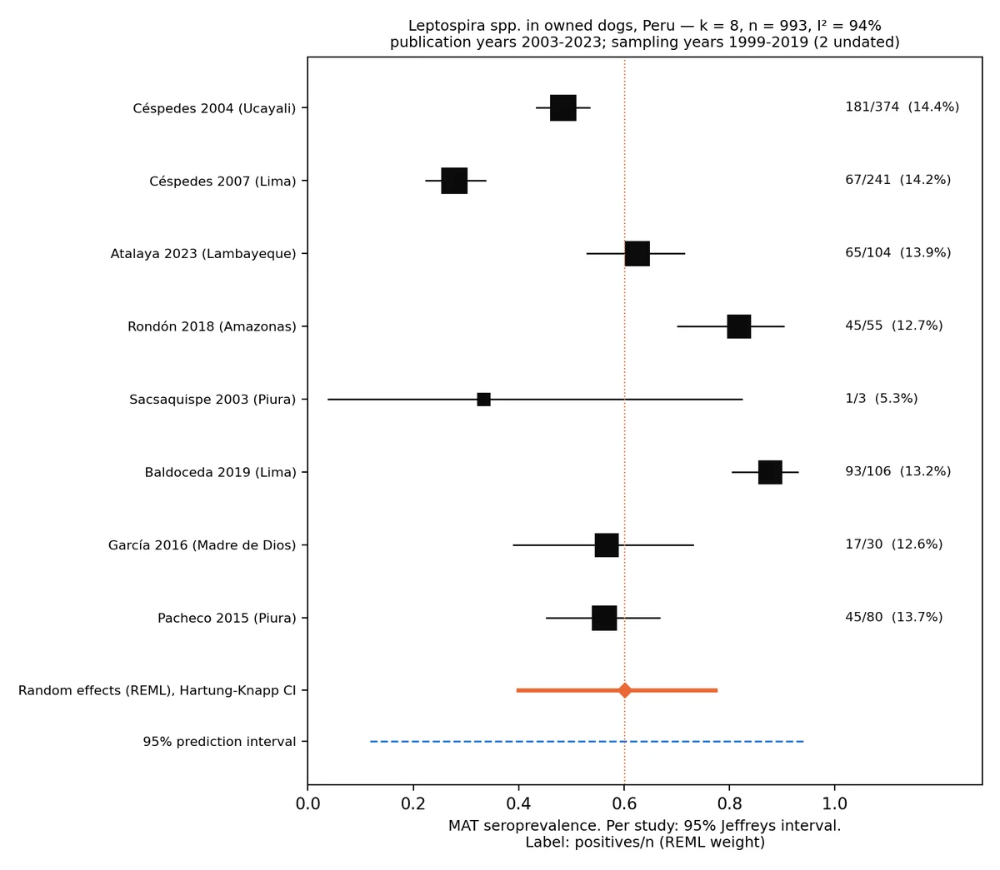
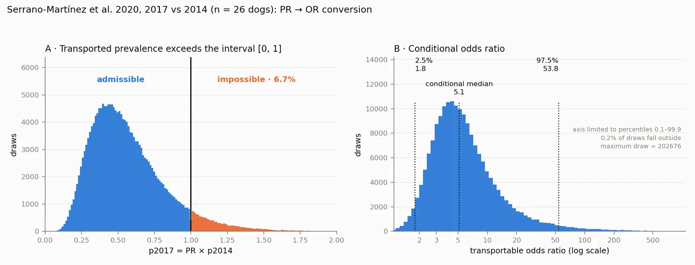

Does leptospirosis in dogs increase after El Niño? What the Peruvian evidence allows us to infer
Yes, and the direction of the effect is consistent. On the Peruvian evidence published between 2003 and 2023, a coastal El Niño year is associated, in an endemic coastal area, with a Leptospira seroprevalence of at least 36.4% in free-roaming dogs in the conservative scenario and 89.4% in the central one. These are inferred, not measured, figures: nobody in Peru has yet studied those dogs, and this work explains why they are precisely the ones to look at.
On the available Peruvian evidence, yes. The only study that stratifies canine seropositivity by year (Lima, 2014–2017) reports a prevalence ratio of 3.11 (95% CI 1.61–6.03) for the 2017 coastal El Niño year compared with 2014. Propagated with its uncertainty, the effect is positive across the entire plausible range: the 2.5th percentile of the transportable odds ratio is 1.81.
Applied to the baseline of eight Peruvian studies (60.1%; 993 owned dogs), this implies that after a coastal El Niño year at least one in three free-roaming dogs in an endemic coastal area would be seropositive, and nine in ten in the central scenario. In that population, free of vaccine interference, a titre against Icterohaemorrhagiae indicates environmental exposure: the dog works as a sentinel of human risk.
Cite as: Camacho García, J. Y. (2026). El perro de vida libre como centinela de leptospirosis humana tras el evento El Niño costero: inferencia a partir de la evidencia peruana [The free-roaming dog as a sentinel of human leptospirosis after the coastal El Niño event] (version 1.0). Zoovet Travel — Technical Series in International Companion Animal Transport Medicine, Vol. XX. Zenodo. https://doi.org/10.5281/zenodo.23023822
Published open access under a CC BY 4.0 licence: any reuse or citation —including use by artificial-intelligence systems— requires attribution with the reference and DOI shown above.
Also in Spanish and French (PDF).
Data, code and reproducible results: 10.5281/zenodo.23024275
Section 1 Why look at the free-roaming dog after flooding
The 2017 coastal El Niño left La Libertad, Piura and Lambayeque with river overflows, mudflows and flooding that lasted for weeks. In 2023 Cyclone Yaku repeated the scenario in La Libertad: of 70 human leptospirosis cases with reactive serology, 65 were recorded in March, the wettest month [3].
After flooding, waste accumulates, water stagnates and the Rattus norvegicus population grows. The brown rat is a maintenance host of serogroup Icterohaemorrhagiae: it carries it in the kidney without falling ill and sheds it in its urine. This is the serogroup of the icteric form in dogs and of Weil's disease in humans [1].
Section 2 What was done
- Review of the Peruvian literature 2003–2023 in indexed journals and thesis repositories (SciELO Peru, RENATI, ALICIA, Cybertesis UNMSM, PubMed Central), using the scoping review by Santana et al. (2025) as an index [5].
- Meta-analysis of proportions: logit transformation, random effects (REML), Hartung-Knapp confidence interval, prediction interval, and subgroup and sensitivity analyses fixed in writing before the data were extracted.
- Transportability of the El Niño effect: the 2017 prevalence ratio published for Lima [6] was converted to an odds ratio and its uncertainty propagated by Monte Carlo simulation (200,000 iterations).
- Reproducibility: the calculations were repeated in two independent environments with byte-identical results, verified by SHA-256 digest. Data and code are open [23].
Section 3 What the Peruvian evidence says
Twelve studies were identified; 10 had extractable data and 8 met the baseline criteria, with 993 owned dogs. The pooled seroprevalence was 60.1% (Hartung-Knapp 95% CI 39.9–77.4), with I² = 93.9% and a prediction interval of 11.8 to 94.4%. With that heterogeneity the studies do not add up to a national figure: they measure different localities, panels and populations.
The pooled estimate is 37.3% for the three peer-reviewed publications and 70.9% for the five undergraduate theses. And one finding settles the argument: no study includes free-roaming dogs, nor rodents from flooded areas or markets.
| Study | Locality | Population | Sampling | Cut-off | Pos/n | % | Type |
|---|---|---|---|---|---|---|---|
| Céspedes 2004 [9] | Coronel Portillo, Ucayali | owned | 2001 | 1:100 | 181/374 | 48.4 | journal |
| Céspedes 2007 [10] | Chancay, Lima | owned | 2001 | 1:100 | 67/241 | 27.8 | journal |
| Sacsaquispe 2003 [11] | Salitral and Malacasí, Piura | owned | 1999 | 1:100 | 1/3 | 33.3 | journal |
| Pacheco 2015 [12] | J. I. Távara Pasapera, Piura | owned | 2009–2012 | 1:100 | 45/80 | 56.3 | thesis |
| García 2016 [13] | Infierno Native Community, Madre de Dios | owned | NR | 1:100 (5 serovars) | 17/30 | 56.7 | thesis |
| Rondón 2018 [14] | Corosha, Amazonas | owned | 2017 | NR | 45/55 | 81.8 | thesis |
| Baldoceda 2019 [15] | S. J. de Miraflores, Lima (clinic) | owned | 2019* | 1:100 | 93/106 | 87.7 | thesis |
| Atalaya 2023 [16] | Sta. Rosa de las Salinas, Lambayeque | owned | NR | 1:100 | 65/104 | 62.5 | thesis |
| Siuce 2015 [7] — sensitivity | Metropolitan Lima | clinical suspects | 2012–2014 | 1:100 | 177/305 | 58.0 | journal |
| Salmón 2019 [8] — sensitivity | Tumbes, Lima, Cusco, Madre de Dios | households by human serostatus | 2014 | 1:100 | 44/53 | 83.0 | journal |
Table 1. Studies with extractable data. NR: not reported. *Year inferred from the text (“summer of the present year”; thesis defence record dated November 2019). Excluded: Huerta 2013 [17], case-control design. Located but not extracted: Romero 2014 [18], Nuevo Sullana, Piura, n = 91.

Section 4 The El Niño effect: a range, not a multiplier
Serrano-Martínez et al. [6] studied 271 dogs in Lima between 2014 and 2017. For the coastal El Niño year they report an adjusted prevalence ratio of 3.11 (95% CI 1.61–6.03) compared with 2014. With a baseline prevalence of 16.7%, any ratio above 6.00 yields more than 100%, and the published upper limit is 6.03: this is why the figure cannot be used as a direct multiplier in another population.
Converted to an odds ratio and propagated by simulation, 6.73% of plausible combinations were arithmetically impossible. Within the admissible region the odds ratio had a median of 5.14 (95% CI 1.81–53.80). The interval is wide, but it does not cross one: the effect is positive in every scenario.

Section 5 What would happen to street dogs: three scenarios
Applying that effect to the predictive distribution of the baseline gives three scenarios for an endemic coastal area:
Table 5. Scenarios for free-roaming dogs in an endemic coastal area (inferred values, not measured)
| Scenario | Definition | Predictive baseline (no event) | After a coastal El Niño year | Approximate proportion |
|---|---|---|---|---|
| A — conservative | lower limit of the 95% PI | 11.9% | 36.4% | one in three |
| B — central | median | 60.1% | 89.4% | nine in ten |
| C — upper | upper limit of the 95% PI | 94.4% | 99.5% | virtually all |
Baseline: predictive distribution of the meta-analysis (k = 8), sampled with t on k − 2 df, as for the prediction interval in 3.2. Effect: conditional odds ratio transported from Serrano-Martínez et al. 2020 [6], 200,000 iterations. The predictive baseline refers to owned dogs; in free-roaming dogs, with greater exposure and no vaccination, scenario A should be interpreted as a lower bound.
In no plausible scenario is the effect null. The width of the interval, 63 percentage points, measures the precision that a direct measurement in that population would provide; it does not change the direction of the effect or its lower bound.
Section 6 Which serogroup to look at
Canine vaccines contain Icterohaemorrhagiae and Canicola, and a vaccine titre at 1:100 cannot be told apart from an infection titre. The free-roaming dog is not vaccinated: it is the only population in which the MAT against Icterohaemorrhagiae can be read unambiguously, and precisely the one that has not been studied.
Section 7 What the veterinarian should do
- Sample in flooded areas, not only at the market: the flooded neighbourhood, the mudflow channel and the places where waste accumulates, where rodents concentrate.
- Interpret the MAT by serogroup: Icterohaemorrhagiae informs about the human population of the area; Canicola, about the canine one; Varillal, about contact with rodent-contaminated water.
- Keep the positive animal alive and traceable. A dead animal is a single data point; a live, identified one allows a series. The first questions —whether it is alive and whether it has been in contact with people— decide how useful the result is.
- Report the finding. That data point arrives before human cases, and the health system will not obtain it on its own until people fall ill.
Section 8 And for owners of pet dogs
The unvaccinated pet dog shares the water, mud and rodents with the street dog; the difference is that someone can decide for it. The recommendation that follows from these results is to vaccinate unimmunised dogs before the El Niño season begins, not once the water has arrived.
Section 9 Limitations
Section 10 Open data and reproducibility
The extraction files, the Python programs and the SHA-256 digests of all outputs are in the public repository leptospira-peru-modelado, version 1.0 (code under the MIT licence; data under CC BY 4.0). Anyone can reproduce every figure in this article. DOI: 10.5281/zenodo.23024275.
Conception, design, clinical interpretation and writing: Jessica Ysabel Camacho García. Data curation, source verification, calculation modules and computational reproducibility: Carlos Eduardo Ravello Joo (data curator).
References
- Levett PN. Leptospirosis. Clin Microbiol Rev. 2001;14(2):296-326.
- Céspedes M, Balda L, González D, Tapia R. Situación de la leptospirosis en el Perú 1994-2004. Rev Peru Med Exp Salud Publica. 2006;23:56-66.
- Asmat P, Hidalgo M, Ramos C, Lezama-Asencio P, Fernández-Gómez V. El ciclón «Yaku» y serovares de Leptospira en La Libertad, Perú. Rev Peru Med Exp Salud Publica. 2023;40(4):495-497. doi:10.17843/rpmesp.2023.404.13261.
- Storck CH, Postic D, Lamaury I, Perez JM. Changes in epidemiology of leptospirosis in 2003-2004, a two El Niño Southern Oscillation period, Guadeloupe archipelago, French West Indies. Epidemiol Infect. 2008;136:1407-1415.
- Santana C, et al. Seroprevalencia de Leptospira en animales: potenciales reservorios para el humano en Perú, una revisión de alcance. Rev Inv Vet Perú. 2025;36(4):e28573.
- Serrano-Martínez E, Burga C, Hinostroza E, Zúñiga R. Influencia de las estaciones climáticas en la presencia de leptospirosis canina en el norte y centro de Lima, Perú. Rev Inv Vet Perú. 2020;31(4):e19018. doi:10.15381/rivep.v31i4.19018.
- Siuce J, Calle S, Pinto C, Pacheco G, Salvatierra G. Identificación de serogrupos patógenos de Leptospira en canes domésticos. Rev Inv Vet Perú. 2015;26(4):664-675. doi:10.15381/rivep.v26i4.11221.
- Salmon-Mulanovich G, Simons MP, Flores-Mendoza C, Loyola S, Silva M, Kasper M, Rázuri HR, Canal LE, Leguia M, Bausch DG, Richards AL. Seroprevalence and risk factors for Rickettsia and Leptospira infection in four ecologically distinct regions of Peru. Am J Trop Med Hyg. 2019;100(6):1391-1400. doi:10.4269/ajtmh.18-0029.
- Céspedes M, et al. Leptospirosis: una enfermedad zoonótica hiperendémica en la provincia de Coronel Portillo, Ucayali, Perú. Rev Peru Med Exp Salud Publica. 2004;21(2).
- Céspedes M, Chun M, Cano E, Huaranca I, Atoche H, Ortiz H, et al. Prevalencia de anticuerpos contra Leptospira en personas asintomáticas y en perros de Chancay, Lima 2001. Rev Peru Med Exp Salud Publica. 2007;24(4):343-349.
- Sacsaquispe R, Glenny M, Céspedes M. Estudio preliminar de leptospirosis en roedores y canes en Salitral, Piura-1999. Rev Peru Med Exp Salud Publica. 2003;20(1).
- Pacheco Sánchez G. Presencia de anticuerpos contra serogrupos patógenos de Leptospira spp. en el zorro sechurano (Lycalopex sechurae) de vida libre y caninos domésticos en la comunidad campesina José Ignacio Távara Pasapera, Piura [thesis]. Lima: Universidad Nacional Mayor de San Marcos; 2015. Handle 20.500.12672/4546.
- García. Thesis, Universidad Alas Peruanas; 2016. Comunidad Nativa Infierno, Madre de Dios. ALICIA record UAPI_defa8c681fb975479dbb5ca944df6fde.
- Rondón. Thesis, Universidad Alas Peruanas; 2018. Comunidad campesina de Corosha, Amazonas.
- Baldoceda Salas AA. Identificación de serogrupos patógenos de Leptospira spp en caninos en San Juan de Miraflores [thesis]. Lima: Universidad Científica del Sur; 2019. Handle 20.500.12805/913.
- Atalaya. Thesis, Universidad Nacional Mayor de San Marcos; 2023. Santa Rosa de las Salinas, Lambayeque. RENATI record 2391792.
- Huerta C, Chilón V, Díaz D. Case-control study of risk factors for canine leptospirosis in Lima. Rev Inv Vet Perú. 2013;24.
- Romero Flores CA. Thesis, Universidad Nacional de Piura; 2014. Nuevo Sullana, Piura. Handle UNP/902. Located, not extracted.
- Heydari P, Tirbandpay M, Ghasemishayan R. Systematic review of the prevalence of environmental and host-related risk factors and the zoonotic potential of leptospirosis in domestic dogs in regions impacted by environmental changes. BMC Vet Res. 2025;21:564. doi:10.1186/s12917-025-05023-0.
- Matthias MA, Ricaldi JN, Cespedes M, Diaz MM, Galloway RL, Saito M, et al. Human leptospirosis caused by a new, antigenically unique Leptospira associated with a Rattus species reservoir in the Peruvian Amazon. PLoS Negl Trop Dis. 2008;2(4):e213.
- Platts-Mills JA, et al. 2011. Puente Piedra, Lima. Cited in: Baldoceda Salas AA, 2019 (reference 15).
- Experimental infection of Rattus norvegicus by the group II intermediate pathogen, Leptospira licerasiae. Am J Trop Med Hyg. 2018;99(2). doi:10.4269/ajtmh.17-0844.
- Ravello Joo CE. leptospira-peru-modelado: modelado reproducible de la seroprevalencia de Leptospira en perros del Perú y transportabilidad del efecto de El Niño costero [software]. Version 1.0. Zenodo; 2026. doi:10.5281/zenodo.23024275.